Importing data into SuperVal¶
How to import data into SuperVal for all modules from Excel or CSV files, and some issues that may arise during the process.
Version
This article is based on Version 9.30 of SuperVal. Any screenshots from earlier versions are not materially different from those in V9.30.
Data¶
You can import data into SuperVal from an Excel file or a CSV (comma delimited) text file.
SuperVal has pre-defined standard field names if you want to use them.
There is flexibility in naming the standard data fields in the data files (Excel or CSV). SuperVal will try to map these names to the standard names.
You can also (optionally) specify the type of format for each column in Row 2.
The format types are:
| code | type | note |
|---|---|---|
| C | character | |
| N | total numeric | the sum if grouped e.g. salaries, contribution accounts |
| n | average numeric | the average if grouped e.g. Contribution Rate or Accrual Rate or Reversion % |
| A | total numeric averaged | the value is an average and needs to be multiplied by NOM for a Total Numeric |
| date | one of: dd/mm/yyyy, ddmmyyyy, mm/dd/yyyy, mmddyyyy |
Examples of how data can be imported into SuperVal, either in an Excel format or a CSV format:
-
Data with no format types in row 2
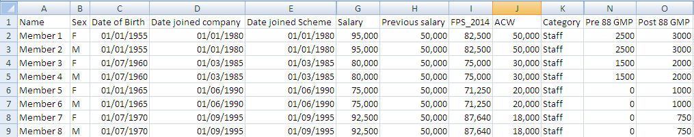
-
Data using pre-defined names and format types
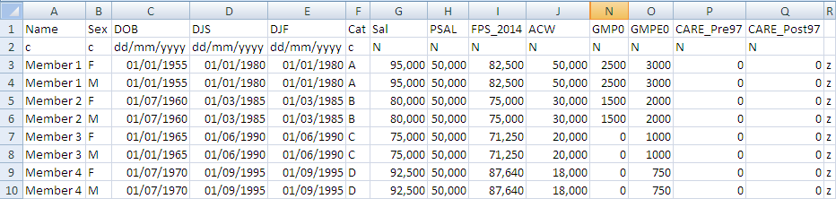
Standard variable names¶
Required fields
Data Build requires standard variables
NAME, SEX, Category (or CAT) and Date of Birth (or DOB)
in row 1 of the data file.
The standard names are listed in the table below.
The standard names can appear anywhere in Row 1 and in any order.
Non-standard names get prefixed with the letter q and treated as user-defined variables.
If a standard data variable name is found within a type of membership
where that variable does not apply (e.g. SAL in a Deferreds
data build) it gets prefixed with a q and treated as a user-defined variable.
The above list does not include static variables such as salary frequency etc. The default value(s) will be retained – if these require changing, edit the data format by Data > Format.
Such changes get discarded if Data Build is redone.
| Actives | Deferreds | Pensioners | Type | Description |
|---|---|---|---|---|
| NOM | NOM | – | N | Number of members to be used if there is grouped data |
| NAME | NAME | NAME | C | Name of each member (numbers can be used) |
| SEX | SEX | SEX | C | Sex of the member, must be M or F |
| CAT | CAT | CAT | C | Category of membership specified. Can be defined using up to 16 characters e.g. Staff, A1 etc |
| DOB | DOB | DOB | D | Date of Birth |
| DJS | – | – | D | Date Joined Company i.e. date joined for company |
| DJF | – | – | D | Date Joined Scheme i.e. date joined for pensionable |
| MOE | MOE | – | C | Mode Of Exit from statuses e.g. death, retirement |
| DOE | DOE | – | D | Date Of Exit (actives) |
| BOE† | BOE† | N | Lump Sum Benefit on Exit | |
| PSAL | – | – | N | Previous Salary |
| SAL | – | – | N | Current Salary |
| ACW | ACW | – | N | Accrued Contributions (actives) or Underpin (deferreds) |
| ACWO† | – | – | N | Accrued Contributions without Interest |
| EACWO† | – | – | N | Accrued Employer Contributions without Interest |
| GMP0 | GMP0 | GMP0 | N | Pre 1988 GMP as at the Valuation Date |
| GMPE0 | GMPE0 | GMPE0 | N | Post 1988 GMP as at the Valuation Date |
| – | – | SDOB | D | Spouse’s Date of Birth |
| – | LD | LD | D | Leaving Service Date |
| – | – | DPC | D | Date First Pension Commenced e.g. retirement date |
| – | – | DOT | D | Date Pension Ceased i.e. exit date from deferred or pensioner status |
| MOT | C | Mode Ceased Pension | ||
| TOP | TOP | C | Type of PUP | |
| BOT† | N | Benefit upon Termination | ||
| TPP† | N | Total Pension Paid | ||
| – | – | MOT | C | Mode Ceased Pension |
| – | – | – | N | Lump Sum on Death in Deferment |
| MEMORSP | C | Member or Spouse | ||
| q___ | q___ | q___ | N/C/D | User Defined Variable- default row |
† Used for Analysis of Surplus only
Data for Analysis of Surplus (AOS)¶
As the previous valuation results have to be rolled forward to the current valuation date and compared with the current valuation results, all the member data input to the previous and current valuations is required. This data is held at individual member data level within member status (Actives, Deferreds and Pensioners).
The AOS data must include data as at the current valuation date and also as at the previous valuation date. The data required is the same data items for the current valuation and the previous valuation.
The columns for the previous valuation data file will have the names of
the variables prefixed by #.
CSV files¶
Excel supports the CSV format. To save a file in this format, click on File > Save As – you will see the following dialogue:
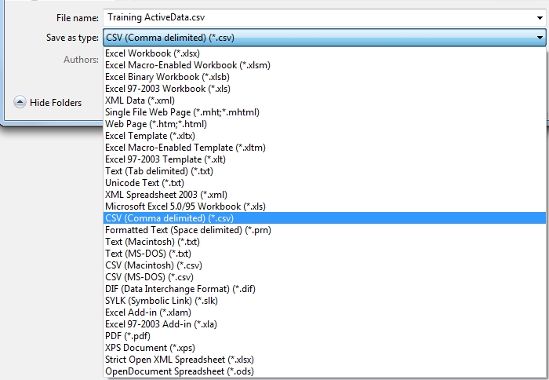
Select CSV (Comma delimited) (*.csv) for Save as type , specify the name
of the file and click Save. The CSV file gets saved in your
designated Input folder.
(Data > Data Build will only allow you to select files from here.)
The names in Row 1 may be specified in any order and in upper or lower case.
Before you save and close the document, ensure that you have selected a cell within the block of your data. Excel will then save all data up to the next blank row / column. (It will save the numbers – not the formulae, and will not save data on other worksheets).
Remove thousand separators from numerical cells before saving in CSV format.
The CSV delimiter and the thousand separator are both commas and it is not possible to distinguish one from the other when reading the CSV file.
Other features of a typical spreadsheet are usually acceptable and Excel disregards them when writing to CSV files.
If you maintain a row of data descriptions in the Excel file, remove it before saving the CSV file.
Finally, once you have saved the CSV file, ensure you close it before importing it into SuperVal.
Data Build¶
Mapping data fields¶
In the CSV or Excel member-data file,
you can either use the standard SuperVal field names described
above, or profit from the new flexibility in naming fields.
Standard field names (e.g. DOB, DJF etc.) continue to
work best but names such as Date of Birth, Date Joined Scheme etc. can
be used and SuperVal will try to map them to the standard names.
SuperVal will then let you map (or un-map, or re-map) any fields that were not identified as standard fields (or were incorrectly identified) when performing the Data Build.
The required format will be assumed for standard data fields. If Row 2 does not contain format types the data formats will be guessed for date fields and non-standard fields.
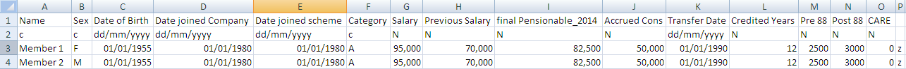
You can correct errors with the Change Data Field Type button.
The Data Build wizard¶
Click Data > Data Build. You will see a dialogue like this:
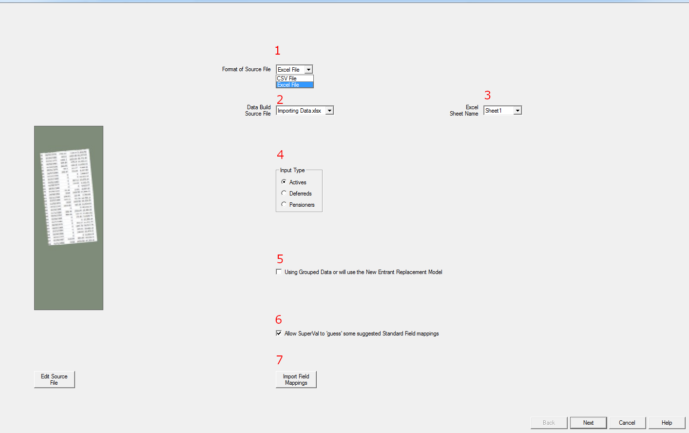
-
Select CSV or Excel file as the format of the member-data file.
-
SuperVal will look for it in the designated Input folder. (File>Properties). If there is more than one CSV / Excel file there, select from the dropdown menu the one you want.
-
Excel files can contain multiple data sheets – select the one you want.
-
Select whether membership type is Actives, Deferreds or Pensioners
-
If not ticked, columns which are numeric (or have
nas a format in the 2nd-row) will be understood as the total value for that member for those columns. If ticked (i.e. if using grouped data or New Entrant Replacement Model) the numeric columns will be understood to be the average value for that group of members. -
If names such as
Date of Birth,Date Joined Schemeetc. are used in the member-data file, tick Allow SuperVal to “guess” some suggested Standard Field mappings. SuperVal will try to map them to the standard names.If you tick Allow SuperVal to “guess” some suggested Standard Field mappings when you then click Next you will see a dialogue asking you to confirm the mappings:
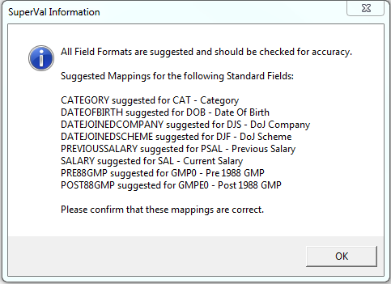
If a Data Build has already been run for this scheme, previous mappings are assumed (but can be amended). You will be asked to confirm the mappings:

-
If a Data Build has been run previously for another scheme, you can import the field mappings from the previous folder.
After you click Next, SuperVal will list the standard and user-defined fields included in the member-data file. You will also see (Not Present) standard fields you might wish to include.
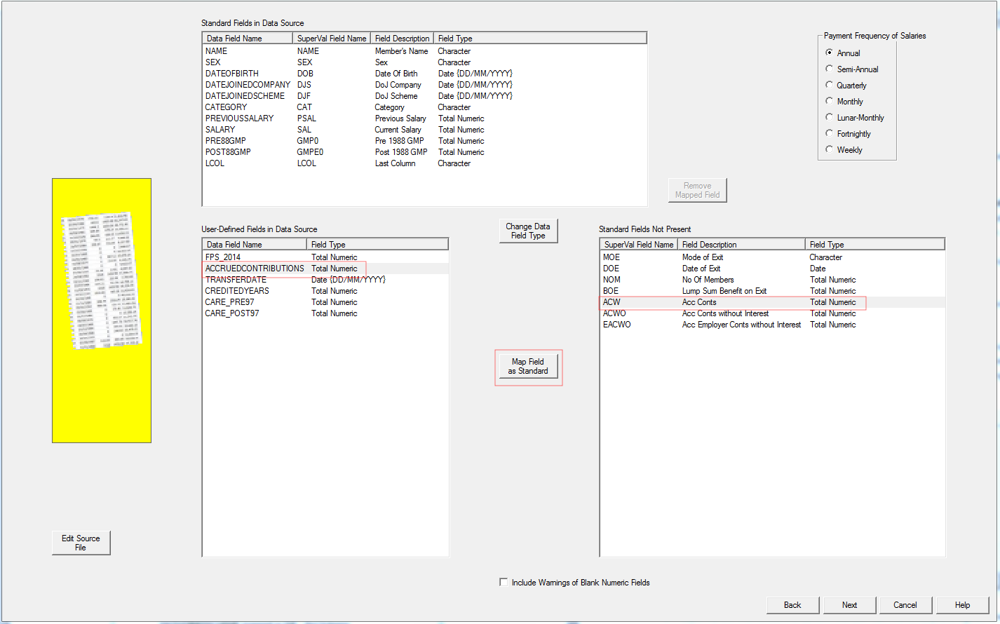
Click the Edit Source File button if you need to modify the CSV or Excel file.
Above, ACCRUEDCONTRIBUTIONSis to be mapped to standard field ACW (accrued contributions with interest):
- In User Defined Field in Data Source select
ACCRUEDCONTRIBUTIONS”. - In Standard Fields Not Present select
ACW - Click Map Field as Standard
SuperVal will check the member-data file, report errors, and warn of possible problems. If it finds errors, Data Build will not proceed until you have corrected them. (Use the Edit Source File to do this.)
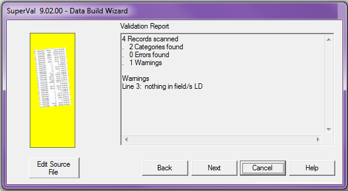
SuperVal will then check the sums in the data file. You can save the checksums output in a separate CSV file in the Input folder. The checksums include all fields of total numeric type.
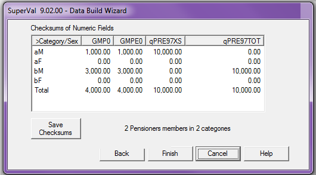
You can use the Cancel button to abort the Data Build.
Click Finish to see the validation page.
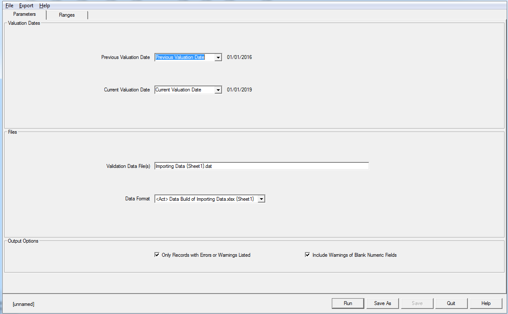
On the Ranges tab you can specify reasonable ranges for numeric data fields .
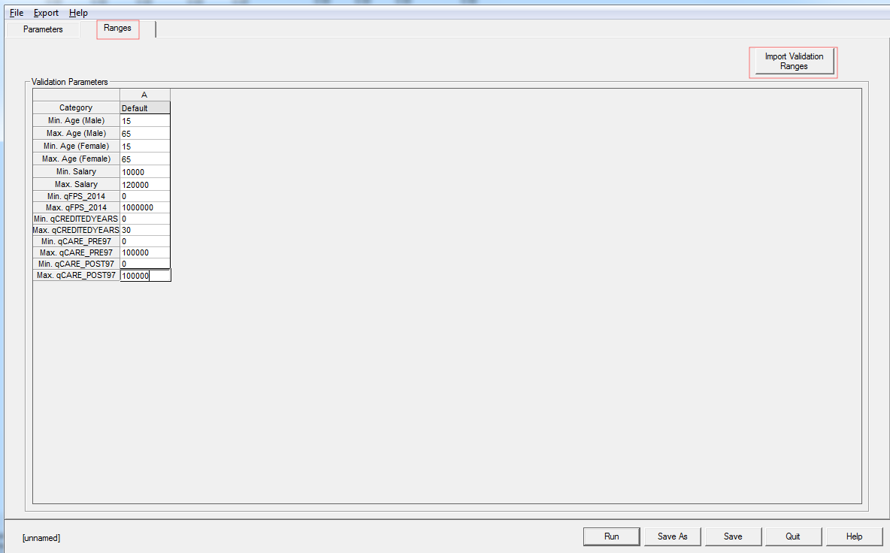
These validation ranges are stored as part of the Data Format created by the Data Build.
Use Import Validation Ranges to copy ranges used previously for the membership class. If you previously set up , these can be copied as the starting point for new validation ranges. e.g.
-
Data Build for
Actives 2018.csvset validation ranges -
Data Build for
Actives 2019.csv: copy the validation ranges used in Data Build ofActives 2018.csv.
This avoids setting up validation ranges again,
as Actives 2018.csv and Actives 2019.csv
are likely to have the same user-defined fields.
Click Run to start validating the data.
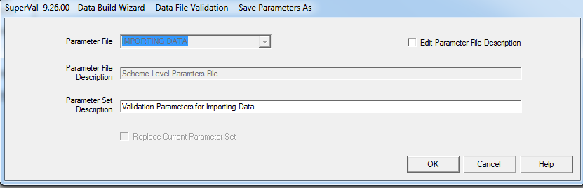
SuperVal will ask you if the scheme details should be updated with the latest Data Build file.
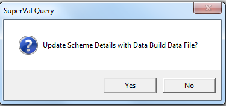
If Yes is selected the scheme details will be updated:
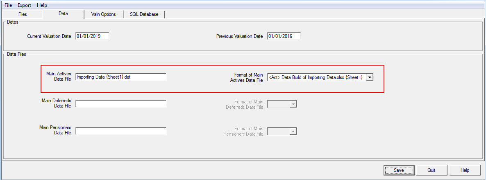
Member-data file¶
SuperVal will write in your Input folder a data file with the same name as the Excel / CSV file and a .DAT extension.
To keep an earlier DAT file, rename it before running Data Build again.
Recommended practice
Use distinct names for the Excel / CSV files containing each type of member data i.e. actives, deferreds and pensioners.
Troubleshooting: getting the data file right¶
Some error messages associated with setting up member data.
- Unable to tie (filename)
-
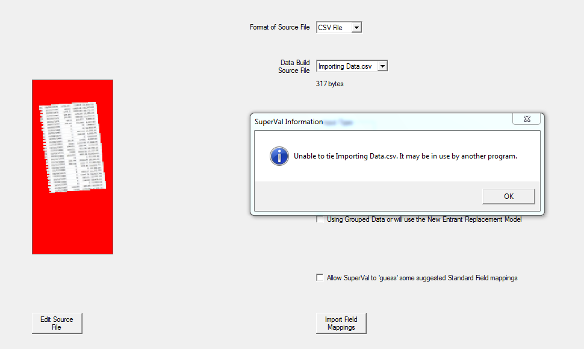
Close the CSV data file before building the DAT file: select File > Close
- Unable to open Excel workbook
-
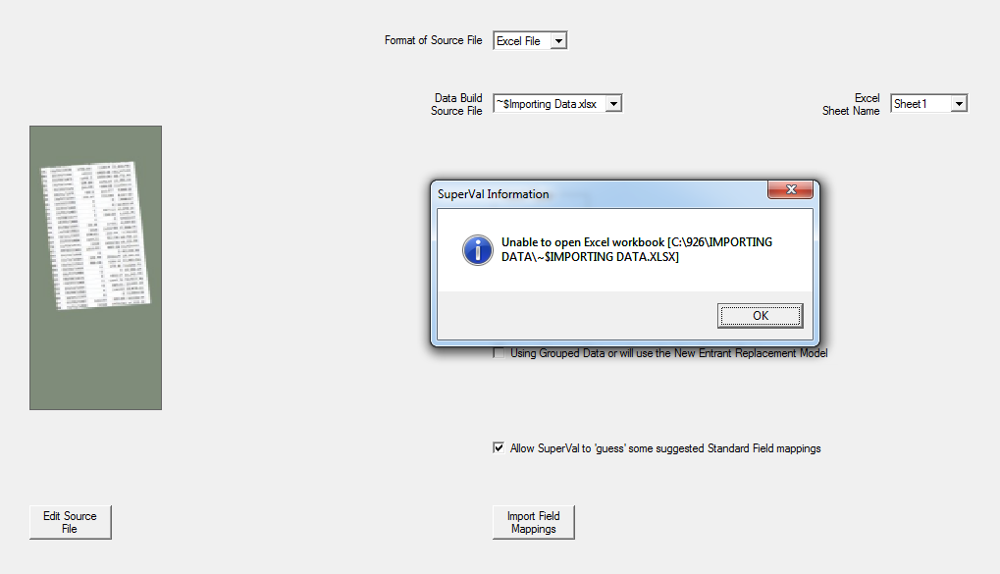
The selected Excel data file is open.
The last saved version of the Excel file can be selected and a .DAT file built from it.
- Missing required fields
-
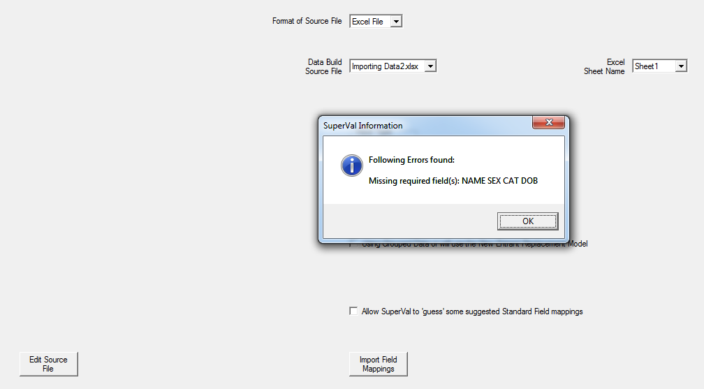
The data file must contain a minimum of four columns, with the headings:
NAME,SEX,CATandDOB. - No data rows
-
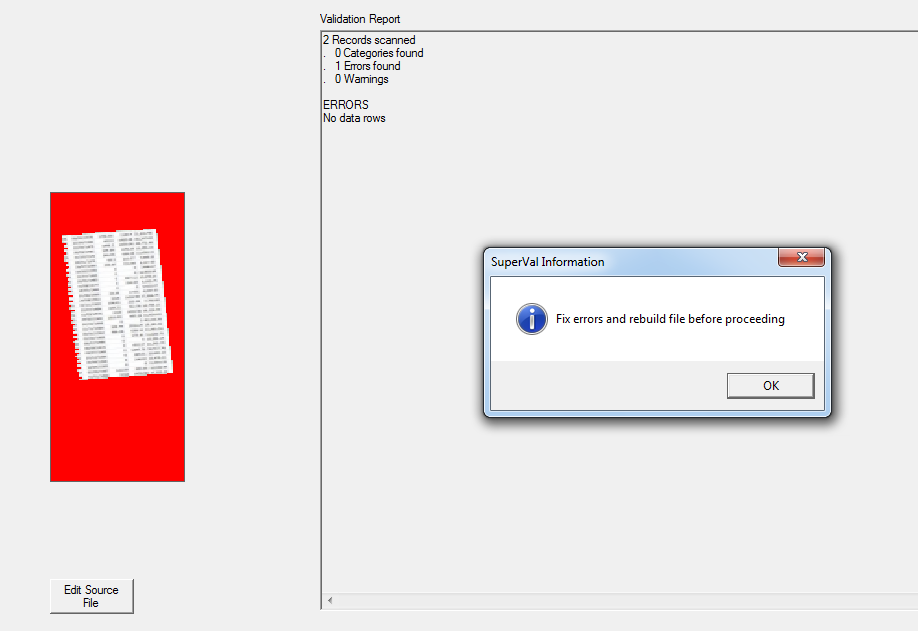
Your data file does not contain any member records.
- Duplicate field names
-
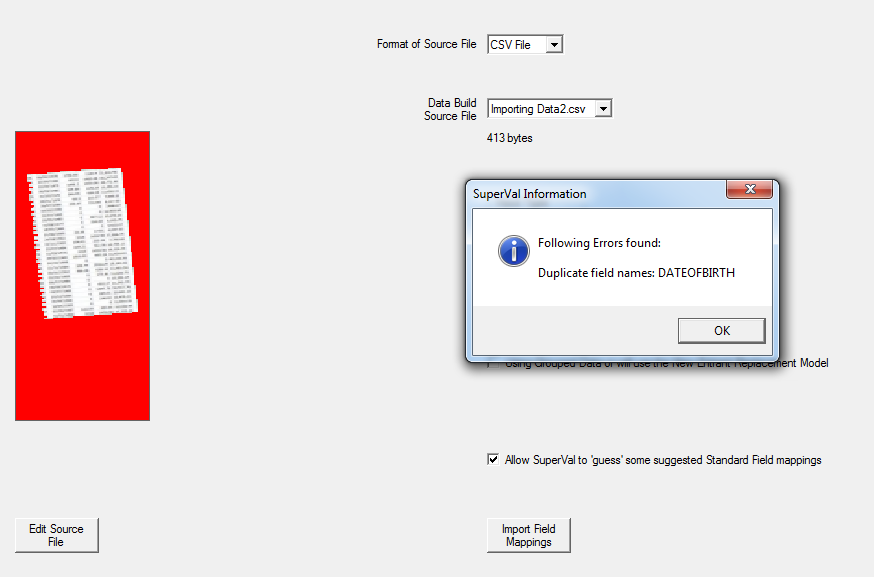
You have specified duplicate names in Row 1, which should contain unique names.
This validation occurs before the
qprefix is added.